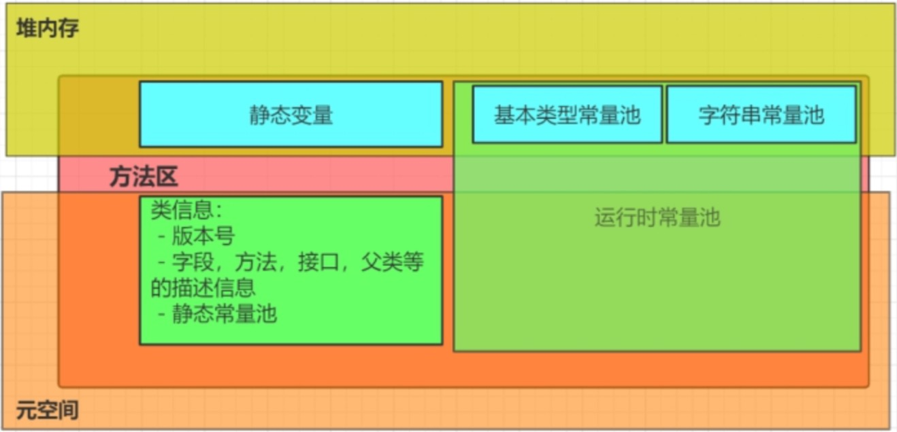
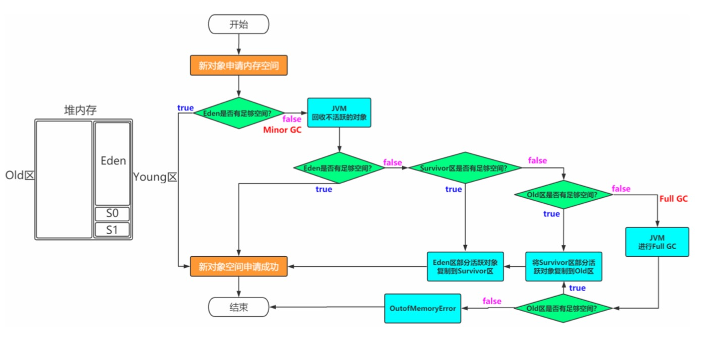
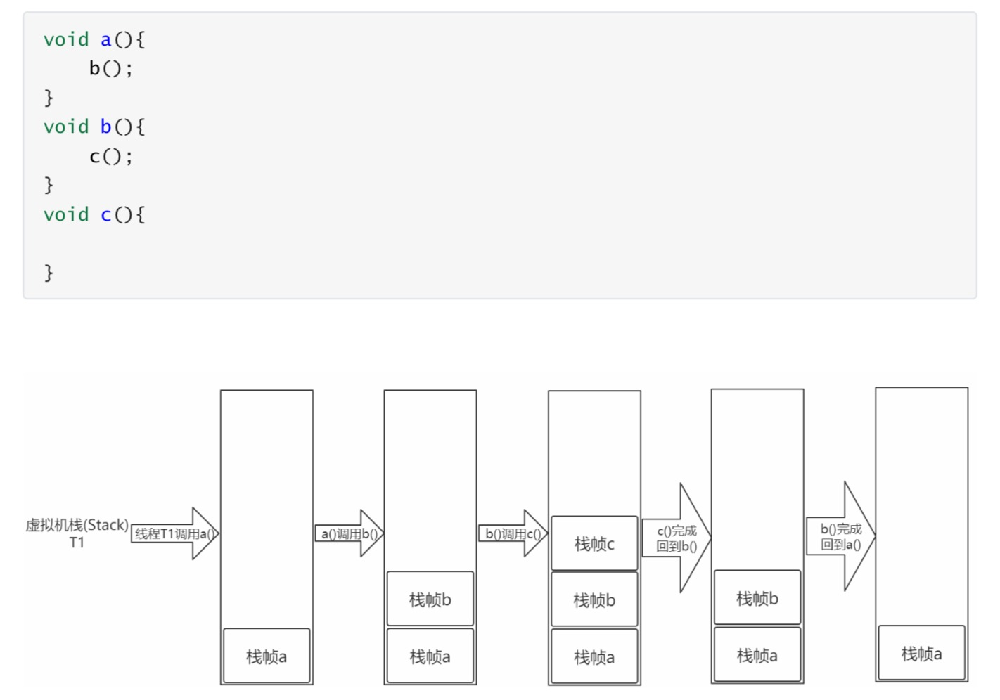
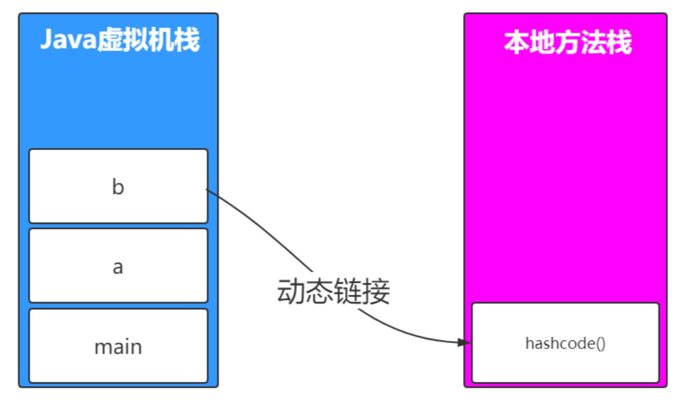

常量池
静态常量池
存储字面量及符号引用
运行时常量池
- 字符串常量池
内存模型

方法区
线程共享，JVM启动时创建，又名非堆，存储已被JVM加载的类信息、常量、静态变量、即时编译器编译后的代码等数据，JDK1.8后方法去被分为两部分，类信息存储在元空间，运行时常量池存储在堆中

堆
线程共享，JVM启动时创建，存储对象实例及数组，空间不足时会OOM，分为Old区和Young区，Young区又分为Survivor区(S0和S1，一样大，又称from区和to区)和Eden区

JVM默认为每个线程在Eden上开辟一个buffer区域，用来加速对象的分配，称之为TLAB，全称:Thread Local Allocation Buffer。 对象优先会在TLAB上分配，但是TLAB空间通常会比较小（默认是Eden区的百分之1），如果对象比较大，那么还是在共享区域分配。
Survivor区存在的意义
如果没有，Eden区每进行一次Minor GC，存活的对象就会被送到老年代，老年代很快被填满，触发Major GC(因为Major GC一般伴随着Minor GC,也可以看做触发了Full GC)，耗时较长。所以Survivor区的存在意义就是减少被送到老年代的对象，进而减少Full GC的发生，Survivor区规定只有经历16次Minor GC还能在新生代中存活的对象才会被送到老年代。
两个Survivor区的必要性
解决空间碎片。
虚拟机栈
线程私有，线程创建时创建，存储线程的运行状态，每一个被线程执行的方法对应栈中的一个栈帧，调用方法压栈，调用完成弹栈。

每个栈帧中包含局部变量表（方法中定义的局部变量以及方法的参数存放在这张表中，局部变量表中的变量不可直接使用，如需要使用的话，必须通过相关指令将其加载至操作数栈中作为操作数使用）、操作数栈、动态链接（指向运行时常量池的引用）、方法返回地址和附加信息。
程序计数器
线程私有，记录线程执行到的位置，以便重新获取到CPU时间片开始执行时能继续执行。 如果线程正在执行Java方法，则计数器记录的是正在执行的虚拟机字节码指令的地址; 如果正在执行的是Native方法，则这个计数器为空。
本地方法栈
线程私有，如果当前线程执行的方法是Native类型的，这些方法就会在本地方法栈中执行。
